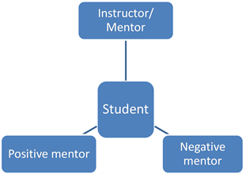

The Importance of Mentorship for Professional Success
By: Hazel
Introduction
Mentorship: The Key to Unlocking Your Professional Potential
As humans, we all need guidance and support to reach our full potential. This is especially true when it comes to our professional growth. Mentorship is a crucial component in developing the skills, knowledge, and network necessary for success in today's competitive job market. Whether you are just starting out in your career or looking to advance to the next level, having a mentor can make all the difference. In this section, we will explore the importance of mentorship, the benefits it offers, and how to find and cultivate a mentorship relationship that works for you. So, buckle up and get ready to take your career to the next level!
ad space
The Benefits of Mentorship
In today's competitive job market, finding your footing and excelling in your field can be a daunting task. That's where mentorship comes in. Effective mentorship can provide invaluable benefits to young professionals, from career guidance and skill development to networking opportunities and greater understanding of industry trends. An experienced mentor can help you navigate the complex landscape of your career and provide critical advice and support along the way. In fact, studies have shown that mentored individuals are more likely to succeed in their careers than those who aren't. So, whether you're just starting out or looking to take your career to the next level, finding a mentor could be the key to unlocking your full potential. Explore the benefits of mentorship and see how it can help you achieve your professional goals.
ad space
Mentorship in Today’s Workplace
Gone are the days when mentorship was reserved only for new hires or those with limited experience. In today's fast-paced and ever-changing work environment, mentorship has become a valuable tool for both employees and employers alike. From helping to navigate complex organizational structures to providing guidance on career growth and development, mentorship in today's workplace can mean the difference between professional stagnation and continued success.
But what does modern mentorship look like? In this article, we explore the elements of effective mentorship programs and how they can benefit both mentees and mentors. We'll also delve into the changing face of mentorship in the digital age, examining how tech-savvy workers are using online networks and social media to connect with experienced professionals and build meaningful relationships.
Drawing on extensive research and real-world examples, this article is a must-read for anyone looking to take their career to the next level. Whether you're a seasoned executive looking to give back or a new employee seeking guidance, the insights and advice contained herein will equip you with the tools you need to succeed in today's competitive workplace.
ad space
Finding a Mentor
Having a mentor can be a game-changer when it comes to professional success. They can offer guidance, advice, and support that you may not receive from colleagues or managers, and can help you develop the skills and knowledge necessary to advance in your career. But how do you find a mentor?
The process can seem daunting, but there are a few key steps you can take to make it easier. First, start by identifying your goals and what you hope to gain from a mentorship relationship. This will help you narrow down potential mentors who have relevant experience and skills.
Next, consider reaching out to people in your network who you admire or respect. This could be a former boss, a colleague in a different department, or even a friend of a friend who works in your industry. Don't be afraid to ask for a coffee or lunch meeting to discuss the possibility of a mentorship relationship.
If you don't have any existing connections in your industry, consider joining professional organizations or attending industry events. These can be great places to meet people who may be interested in mentorship opportunities.
Finally, be open to the idea that mentorship relationships may happen organically. You may click with someone you meet at a networking event, or a colleague may offer to show you the ropes in a particular area. It's important to be open to these opportunities and to be proactive about fostering those relationships.
Remember, finding a mentor is just the first step. Building and maintaining a successful mentorship relationship takes effort and commitment from both parties. But with the right person by your side, the benefits can be immeasurable.
ad space
The Future of Mentorship
In today's fast-paced and constantly evolving professional world, mentorship has become an increasingly essential resource for individuals seeking career growth and development. And as we look towards the future, the role of mentorship in shaping successful and fulfilling careers is only set to become more significant.
The Future of Mentorship is a topic that explores the evolving landscape of mentor-mentee relationships and the ways in which individuals can use mentorship to achieve their professional goals. Whether you're a recent graduate entering the workforce or a seasoned professional looking to take your career to the next level, mentorship can offer invaluable guidance, support, and insight.
Research has shown that mentorship can have a significant impact on career success. In fact, a recent study by Deloitte found that employees who have had a mentor are promoted five times more often than those without a mentor. From offering guidance on career goals and strategies to providing valuable industry insights and connections, mentors are an invaluable resource for anyone looking to advance their career.
As the workplace continues to evolve and become more complex, the importance of mentorship is only set to increase. The future of mentorship is not only about finding the right mentor, but also about cultivating a culture of mentorship within organizations. By encouraging employees to seek out mentors and creating opportunities for mentorship, organizations can foster a collaborative and supportive work environment that benefits everyone.
Overall, The Future of Mentorship is a critical topic for anyone looking to achieve professional success. By embracing the power of mentorship, individuals can gain the skills, knowledge, and support they need to take their careers to new heights and thrive in a constantly changing workplace. So what are you waiting for? Start exploring the world of mentorship today and unlock your full potential!
ad space
Conclusion
Discover the Power of Mentorship: Your Key to Achieving Lasting Professional Success
As we come to the conclusion of our discussion on the importance of mentorship for professional success, it's clear that having a mentor is more than just a way to gain knowledge and skills in a given field. It's a way to gain the support, guidance, and perspective needed to navigate the complex and oftentimes daunting landscape of the modern workplace.
Studies consistently show that having a mentor can lead to higher job satisfaction, increased promotions and pay raises, and overall greater success in one's career. Mentors can provide valuable feedback, introduce their mentees to important contacts and resources, and help them navigate difficult workplace situations with more confidence and ease.
But mentorship is not just beneficial for the mentee—it's also a rewarding experience for the mentor. Serving as a mentor can help professionals develop their leadership skills, deepen their industry knowledge, and give back to their community by helping to shape the next generation of professionals.
So, whether you're a seasoned industry veteran or just starting out in your career, consider the power of mentorship to help you achieve lasting professional success. Whether you're seeking to advance to the next level, navigate a difficult workplace situation, or simply gain a new perspective on your career goals, a mentor can be your guide, your sounding board, and your source of inspiration along the way. So why wait? Start building your mentorship relationships today and discover what the power of mentorship can do for you!
ad space